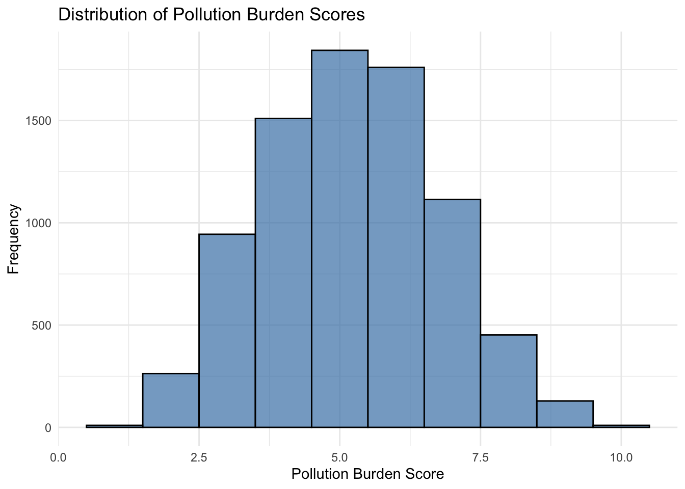
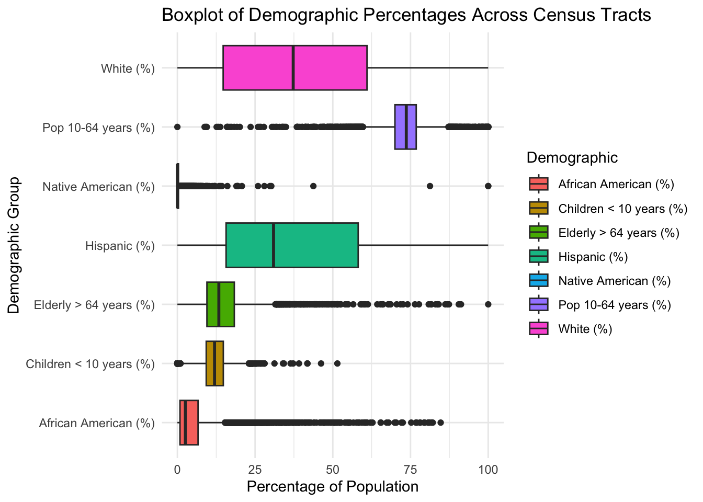

| Variable | Description |
|---|---|
| Census Tract | Census Tract ID from the 2010 Census |
| Total Population | Estimated population in each census tract (2019 ACS) |
| California County | County in which each census tract is located |
| ZIP | ZIP code for each census tract |
| Approximate Location | Approximate city or area name based on boundary files |
| Longitude | Longitude of the census tract centroid |
| Latitude | Latitude of the census tract centroid |
| CES 4.0 Score | Final CalEnviroScreen score (Pollution Burden × Pop. Characteristics) |
| CES 4.0 Percentile | Statewide percentile of the CES score |
| CES 4.0 Percentile Range | Grouped CES percentile (e.g., 0–5%, 5–10%, etc.) |
| Ozone | Daily max 8-hour ozone concentration |
| Ozone Pctl | Ozone percentile |
| PM2.5 | Annual average PM2.5 concentration |
| PM2.5 Pctl | PM2.5 percentile |
| Diesel PM | Diesel particulate emissions from transportation |
| Diesel PM Pctl | Diesel PM percentile |
| Tox. Release | Toxic air releases from facilities (modeled) |
| Tox. Release Pctl | Toxic release percentile |
| Traffic | Traffic density near census tract boundary |
| Traffic Pctl | Traffic percentile |
| Cleanup Sites | Count of cleanup sites weighted by proximity |
| Cleanup Sites Pctl | Cleanup sites percentile |
| Haz. Waste | Hazardous waste sites/facilities |
| Haz. Waste Pctl | Hazardous waste percentile |
| Solid Waste | Solid waste sites/facilities |
| Solid Waste Pctl | Solid waste percentile |
| Pollution Burden | Average of pollution percentiles (weighted) |
| Pollution Burden Score | Scaled pollution burden score (0–10) |
| Pollution Burden Pctl | Pollution burden percentile |
| Asthma | Emergency department visit rate for asthma |
| Asthma Pctl | Asthma percentile |
| Low Birth Weight | Percent of low birth weight infants |
| Low Birth Weight Pctl | Low birth weight percentile |
| Cardiovascular Disease | Emergency visit rate for heart attacks |
| Cardiovascular Disease Pctl | Cardiovascular disease percentile |
| Pop. Char. | Average of population vulnerability percentiles |
| Pop. Char. Score | Scaled population characteristics score (0–10) |
| Pop. Char. Pctl | Population characteristics percentile |
| Children < 10 years (%) | Percent of population under age 10 |
| Pop 10–64 years (%) | Percent of population aged 10–64 |
| Elderly > 64 years (%) | Percent of population over age 64 |
| Hispanic (%) | Percent identifying as Hispanic or Latino |
| White (%) | Percent identifying as non-Hispanic White |
| African American (%) | Percent identifying as non-Hispanic Black |
| Native American (%) | Percent identifying as non-Hispanic Native American |
| Asian American (%) | Percent identifying as non-Hispanic Asian |
| Other/Multiple (%) | Percent identifying as other or multiple races |
Data
We describe the sources of our data and the cleaning process.
Data Description
The CalEnviroScreen data, available for download at “OEHHA’s website”, is compiled by the Office of Environmental Health Hazard Assessment (OEHHA) under the California Environmental Protection Agency (CalEPA). This dataset is designed to assess cumulative environmental burdens and population vulnerabilities across California’s communities, specifically at the census tract level. It includes indicators on pollution exposure, environmental effects, sensitive populations, and socioeconomic factors, allowing policymakers, researchers, and the public to identify areas most impacted by environmental hazards. The data was collected to support state efforts in environmental justice and resource allocation, particularly to assist in directing funding and policy initiatives to disadvantaged communities. By integrating environmental and demographic data, CalEnviroScreen provides a comprehensive tool for understanding disparities in environmental health risks across the state.
The data has been used for research in the San Ysidro, California community because it’s located near the world’s busiest border crossing. Residents were predominately from marginalized communities and had complained that government air monitoring did not adequately measure air quality in their community. By collaborating with the San Ysidro community in San Diego, the OEHHA was able to collect data using low-cost technology to prioritize funding for identifying California communities with higher pollution burden scores and demographic vulnerabilities.
The CalEnviroScreen data has been used effectively in identifying the affected communities hence calling for policy action to direct cap-and-trade revenues to highly impacted areas, and also has been updated over the years to include more indicators and greater geographic specificity. This information is used by policymakers to allocate funds for environmental justice, guide regulatory enforcement, and support programs that target pollution control and public health improvements.
Data Files and Description
The original data was downloaded from CalEnviroScreen 4.0, which provides statewide data on environmental and demographic indicators at the census tract level. The data came in a single Excel file with multiple sheets. One sheet contained pollution and environmental exposure indicators, while another contained population and demographic characteristics. To prepare the data for analysis, we extracted each of these sheets and saved them as separate CSV files: pollution_data.csv and demographic_data.csv.
The pollution_data.csv file includes key variables such as Ozone, PM2.5, Diesel PM, and Traffic, along with their respective percentiles (e.g., “Ozone Pctl”, “PM2.5 Pctl”). These values quantify the level of environmental pollution affecting each census tract. It also includes summary indicators such as “Pollution Burden Score” and “CES 4.0 Score”, which are composite measures used by the state to assess environmental vulnerability.
The demographic_data.csv file contains population-level statistics, including Total Population, Children < 10 years (%), and Elderly > 64 years (%), as well as racial and ethnic breakdowns such as Hispanic (%), African American (%), and Asian American (%). These demographic variables allow for an assessment of how pollution levels intersect with age and race across regions.
To simplify the analysis, we focused on the most relevant environmental and demographic variables and removed columns related to less directly useful metrics like groundwater threats, education, and unemployment. Together, the cleaned and merged dataset allows us to explore the relationship between environmental burdens and community demographics in California.
Variable description:
Key variables include:
Environmental Related statistics: like Pollution Burden Score, which is a score scaled from 1 -10 and weighs both environmental effects and pollution indictors. It is the outcome variable we’re attempting to measure the effect size with.
Location: California county that the census tract falls within
Race: The percentage of each racial group in each census tract.
Other related statistics: Like poverty, education level, unemployment rate, Housing burden, Birth weight, potentially revealing relationships between those statistics and environmental levels.
Official Data Dictionary:
Dataset Distribution

The histogram above illustrates the distribution of Pollution Burden Scores in California, which shows that pollution scores are fairly normally distributed among all census tracts. The pollution score with the highest frequency observed is 5.0. However, our project aims to determine if census tracts with greater pollution scores might be communities with higher racial/ethnic minority populations.

The boxplots above shows the distribution of the percentage of demographics in each census tract. We observed that census tracts with a higher percentages of individuals in the age range 10 to 64 years old were more common, and that so were census tracts with higher percentages of White individuals. However, the distribution seems to be widely dispersed with various outliers for each demographic catergory.
| Summary Statistics for Numerical Variables | ||||
|---|---|---|---|---|
| Includes mean, median, minimum, and maximum values | ||||
| Variable | Mean | Median | Minimum | Maximum |
| Census Tract | 6,054,895,764.00 | 6,059,052,505.00 | 6,001,400,100.00 | 6,115,041,100.00 |
| Total Population | 4,889.05 | 4,615.00 | 0.00 | 38,754.00 |
| Longitude | −119.41 | −118.43 | −124.30 | −114.31 |
| Latitude | 35.50 | 34.21 | 32.55 | 41.95 |
| CES 4.0 Score | 28.32 | 25.55 | 1.03 | 93.18 |
| CES 4.0 Percentile | 50.01 | 50.00 | 0.01 | 100.00 |
| Ozone | 0.05 | 0.05 | 0.03 | 0.07 |
| Ozone Pctl | 50.90 | 50.54 | 0.19 | 100.00 |
| PM2.5 | 10.15 | 10.12 | 1.88 | 16.39 |
| PM2.5 Pctl | 50.01 | 50.01 | 0.01 | 100.00 |
| Diesel PM | 0.23 | 0.14 | 0.00 | 14.61 |
| Diesel PM Pctl | 50.01 | 50.01 | 0.01 | 100.00 |
| Tox. Release | 1,623.95 | 456.33 | 0.00 | 96,985.63 |
| Tox. Release Pctl | 49.78 | 49.77 | 0.00 | 100.00 |
| Traffic | 1,117.45 | 881.04 | 20.75 | 45,752.00 |
| Traffic Pctl | 50.01 | 50.00 | 0.01 | 100.00 |
| Cleanup Sites | 8.58 | 2.00 | 0.00 | 300.95 |
| Cleanup Sites Pctl | 33.72 | 25.63 | 0.00 | 100.00 |
| Haz. Waste | 0.67 | 0.28 | 0.00 | 27.93 |
| Haz. Waste Pctl | 47.51 | 47.41 | 0.00 | 100.00 |
| Solid Waste | 2.10 | 0.20 | 0.00 | 64.25 |
| Solid Waste Pctl | 28.08 | 9.67 | 0.00 | 100.00 |
| Pollution Burden | 42.69 | 42.50 | 4.58 | 81.90 |
| Pollution Burden Score | 5.21 | 5.19 | 0.56 | 10.00 |
| Pollution Burden Pctl | 50.01 | 50.01 | 0.01 | 100.00 |
| Asthma | 51.98 | 45.71 | 4.28 | 243.29 |
| Asthma Pctl | 50.02 | 50.01 | 0.01 | 100.00 |
| Low Birth Weight | 5.00 | 4.92 | 0.00 | 13.71 |
| Low Birth Weight Pctl | 50.01 | 50.05 | 0.00 | 100.00 |
| Cardiovascular Disease | 13.41 | 12.42 | 2.86 | 40.85 |
| Cardiovascular Disease Pctl | 50.04 | 50.02 | 0.01 | 100.00 |
| Pop. Char. | 49.85 | 49.81 | 3.24 | 96.40 |
| Pop. Char. Score | 5.17 | 5.17 | 0.34 | 10.00 |
| Pop. Char. Pctl | 50.01 | 50.00 | 0.01 | 100.00 |
| Children < 10 years (%) | 12.06 | 11.96 | 0.00 | 51.47 |
| Pop 10-64 years (%) | 73.13 | 73.64 | 0.00 | 100.00 |
| Elderly > 64 years (%) | 14.80 | 13.34 | 0.00 | 100.00 |
| Hispanic (%) | 38.09 | 30.94 | 0.00 | 100.00 |
| White (%) | 38.68 | 37.26 | 0.00 | 100.00 |
| African American (%) | 5.57 | 2.57 | 0.00 | 84.71 |
| Native American (%) | 0.42 | 0.00 | 0.00 | 100.00 |
| Asian American (%) | 13.98 | 8.43 | 0.00 | 94.55 |
| Other/Multiple (%) | 3.27 | 2.85 | 0.00 | 17.07 |
| Top Categories by Frequency | ||
|---|---|---|
| Most common values for each categorical variable | ||
| Variable | Value | Count |
| Approximate Location | Los Angeles | 996 |
| Approximate Location | San Diego | 280 |
| Approximate Location | San Francisco | 195 |
| Approximate Location | San Jose | 188 |
| Approximate Location | Oakland | 113 |
| CES 4.0 Percentile Range | 15-20% | 397 |
| CES 4.0 Percentile Range | 25-30% | 397 |
| CES 4.0 Percentile Range | 30-35% | 397 |
| CES 4.0 Percentile Range | 40-45% | 397 |
| CES 4.0 Percentile Range | 5-10% | 397 |
| California County | Los Angeles | 2343 |
| California County | San Diego | 627 |
| California County | Orange | 582 |
| California County | Riverside | 453 |
| California County | Santa Clara | 372 |
Data Loading and Cleaning
Merging Pollution and Demographic Data For this project, we worked with two datasets: pollution_data.csv and demographic_data.csv. Both datasets were read into R using the read_csv() function from the tidyverse package, and saved as .rds files using write_rds() for easier access later. The two datasets share some columns, including Total Population, California County, CES 4.0 Score, CES 4.0 Percentile, and CES 4.0 Percentile Range. So these columns were dropped from the pollution_data dataset before being merged with the demographic_data dataset. This was done using the following code:
pollution_data <- pollution_data |>
select(-c('Total Population', 'California County', 'CES 4.0 Score', 'CES 4.0 Percentile', 'CES 4.0 Percentile Range'))The two datasets were then joined using a left join on the shared column “Census Tract” to ensure that all pollution records remained, even if corresponding demographic data was missing. This was done with the following line of code:
cleaned_dataset <-
left_join(pollution_data, demographic_data, by ="Census Tract")Removing Columns
After merging, we removed several columns that were not relevant to our analysis. The original dataset included data for both air and water pollution. However, since our project is focused on air pollution we have removed the columns relevant to water pollution. These included environmental and social indicators such as drinking water, lead, pesticides, unemployment, and housing burden. Because the merge process introduced suffixes like .x and .y to distinguish duplicate column names, we used a for loop combined with select(-contains(…)) to remove all columns containing those key patterns, regardless of suffix:
columns_to_remove_patterns <- c(
"Drinking Water", "Lead", "Pesticides", "Groundwater Threats", "Imp. Water Bodies", "Education", "Linguistic Isolation","Poverty", "Unemployment", "Housing Burden"
)
for (pattern in columns_to_remove_patterns) {
cleaned_dataset <- cleaned_dataset |>
select(-contains(pattern))
}Imputing Missing Values
We then checked for missing values using colSums(is.na(cleaned_dataset)) and found that several columns were missing data, particularly in Los Angeles. Despite this, we decided to impute any missing values using a k-nearest neighbors imputation method:
# convert character columns to factors
cleaned_dataset <- cleaned_dataset |>
mutate(across(where(is.character), as.factor))
# Impute any null values using KNN approach
pollution_recipe <- recipe(~ ., data = cleaned_dataset) |>
step_impute_knn(all_predictors(), , neighbors = 3)
prepared_recipe <- prep(pollution_recipe)
imputed_data <- bake(prepared_recipe, cleaned_dataset)Writing the Transformation to Cleaned Dataset
Finally, the cleaned dataset was saved to an .rds file using:
write_rds(cleaned_dataset, file = here::here("dataset", "cleaned_dataset.rds"))All steps were carried out using packages from the tidyverse, including dplyr and tidyr for data manipulation, readr for reading in the datasets, and gt for creating summary tables. We used the additional recipes package to use imputation to handle missing values using a KNN methodology. A full record of these operations is provided in the script: clean_data.R.
Metrics on what data was missing in the original pollution dataset can be found in Blog Post 3.